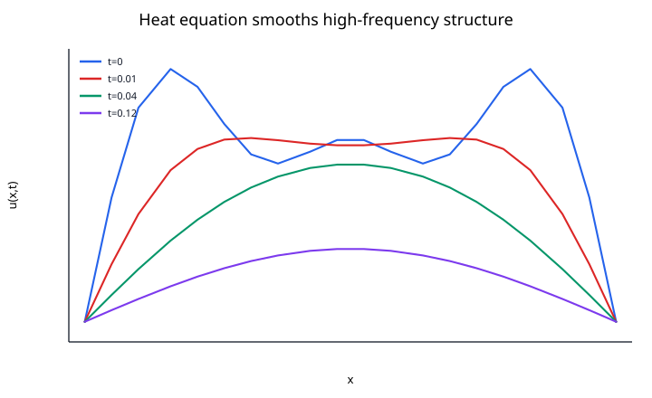
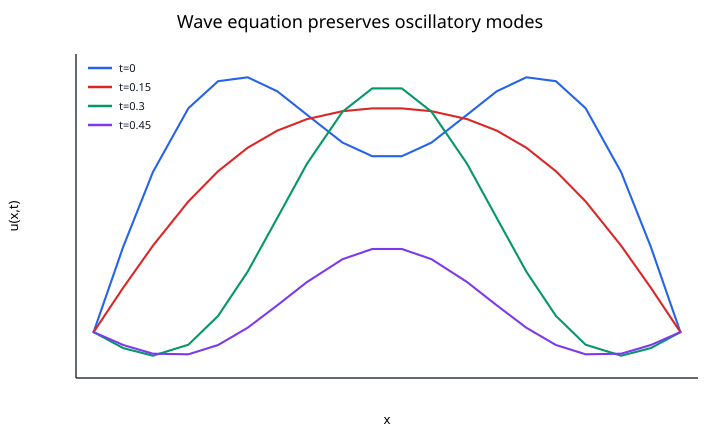

A partial differential equation (PDE) relates an unknown function of several independent variables to its partial derivatives. PDEs describe fields rather than single trajectories: temperature in space and time, pressure in a fluid, displacement in an elastic body, or the amplitude of a wave.
A general PDE can be written schematically as
$$ F\left(\mathbf{x}, t, u, \nabla u, \nabla^2 u, \ldots \right) = 0. $$
Here $\mathbf{x}$ denotes one or more spatial coordinates and $t$ may represent time.
For an ODE, specifying enough initial data often determines a trajectory. A PDE also needs information about the spatial domain and its boundary.
For a domain $\Omega$, typical boundary conditions include:
Dirichlet
$$ u = g \qquad \text{on } \partial\Omega. $$
Neumann
$$ \frac{\partial u}{\partial n} = g \qquad \text{on } \partial\Omega. $$
Robin
$$ \alpha u + \beta \frac{\partial u}{\partial n} = g \qquad \text{on } \partial\Omega. $$
Time-dependent PDEs also require initial data, such as
$$ u(\mathbf{x},0) = u_0(\mathbf{x}). $$
For a second-order linear PDE in two variables,
$$ A u_{xx} + 2B u_{xy} + C u_{yy} + \text{lower-order terms} = g, $$
the sign of
$$ B^2 - AC $$
provides the classical classification.
If
$$ B^2 - AC<0, $$
the PDE is elliptic.
Prototype:
$$ \nabla^2u = 0. $$
Elliptic problems often describe equilibrium states, such as steady temperature or electrostatic potential.
If
$$ B^2 - AC = 0, $$
the PDE is parabolic.
Prototype:
$$ u_t = \alpha u_{xx}. $$
This is the heat equation. It smooths spatial variation as time passes.

If
$$ B^2 - AC>0, $$
the PDE is hyperbolic.
Prototype:
$$ u_{tt} = c^2u_{xx}. $$
This is the wave equation. It propagates disturbances at finite speed.

Consider a rod $0\le x\le L$:
$$ u_t = \alpha u_{xx}. $$
A typical initial-boundary value problem is
$$ u(x,0) = u_0(x), $$
$$ u(0,t) = u(L,t) = 0. $$
The coefficient $\alpha>0$ is the diffusivity.
For the Fourier mode
$$ u_0(x) = \sin\left(\frac{\pi x}{L}\right), $$
the exact solution is
$$ u(x,t) = e^{-\alpha(\pi/L)^2t} \sin\left(\frac{\pi x}{L}\right). $$
Higher-frequency modes decay faster because their second derivatives are larger. This is the mathematical reason diffusion smooths sharp spatial variation.
For a vibrating string,
$$ u_{tt} = c^2u_{xx}, $$
where $c$ is the wave speed.
Two initial conditions are required:
$$ u(x,0) = u_0(x), $$
$$ u_t(x,0) = v_0(x). $$
With fixed ends,
$$ u(0,t) = u(L,t) = 0. $$
The solution can be decomposed into normal modes. Unlike the heat equation, the ideal wave equation does not damp those modes; energy oscillates between kinetic and potential forms.
Laplace's equation is
$$ \nabla^2u = 0. $$
Poisson's equation adds a source:
$$ -\nabla^2u = f. $$
These equations occur in electrostatics, steady heat conduction, gravity, and potential flow.
For elliptic equations, boundary values influence the solution throughout the domain. There is no preferred time direction because time is absent from the model.
A simple transport equation is
$$ u_t + c u_x = 0. $$
Its exact solution is
$$ u(x,t) = u_0(x - ct), $$
so the initial profile moves with speed $c$ without changing shape.
This equation highlights the importance of numerical conservation and numerical diffusion: a poor discretization may artificially smear or oscillate around a transported profile.
A common way to solve time-dependent PDEs numerically is to discretize space first.
For the heat equation, use grid points $x_j=j\Delta x$ and the centered difference
$$ u_{xx}(x_j,t) \approx \frac{u_{j-1}-2u_j+u_{j+1}}{\Delta x^2}. $$
Then the PDE becomes a system of ODEs:
$$ \frac{du_j}{dt} = \alpha \frac{u_{j-1}-2u_j+u_{j+1}}{\Delta x^2}. $$
An ODE solver can then integrate this system in time. This is the method of lines.
If forward Euler is used in time together with centered differences in space,
$$ u_j^{n+1} = u_j^n + r \left(u_{j-1}^n - 2u_j^n + u_{j+1}^n \right), $$
where
$$ r = \frac{\alpha\Delta t}{\Delta x^2}. $$
In one spatial dimension, stability requires
$$ r\le \frac{1}{2}. $$
This is a typical CFL-type restriction: refining the spatial grid may force a much smaller time step.
Replace derivatives with differences on a grid. Finite differences are simple and effective on regular geometries.
Integrate conservation laws over small control volumes and update fluxes across their boundaries. This is particularly natural for fluid dynamics and conservation laws.
Approximate the solution by basis functions on a mesh and enforce a weak form of the PDE. Finite elements handle irregular geometries and variable material properties well.
Approximate the solution using global basis functions such as Fourier or Chebyshev modes. For smooth problems, spectral methods can converge extremely rapidly.
Many important PDEs are nonlinear. Examples include:
Burgers' equation
$$ u_t + u u_x = \nu u_{xx}. $$
Reaction-diffusion
$$ u_t = D\nabla^2u + R(u). $$
Incompressible Navier--Stokes
$$ \frac{\partial\mathbf{v}}{\partial t} + (\mathbf{v}\cdot\nabla)\mathbf{v} = -\frac{1}{\rho}\nabla p + \nu\nabla^2\mathbf{v} + \mathbf{f}, $$
$$ \nabla\cdot\mathbf{v} = 0. $$
Nonlinearity can introduce shocks, bifurcations, turbulence, and pattern formation.